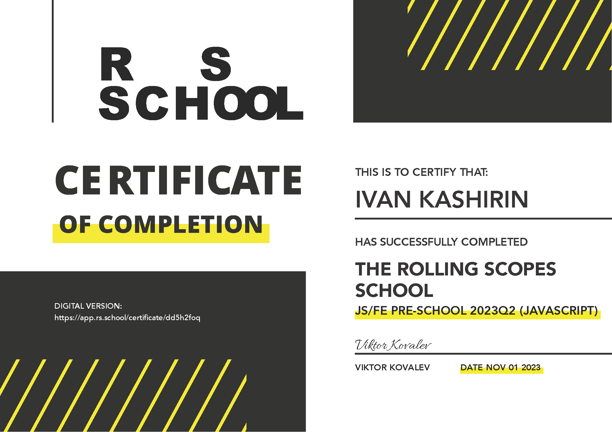

Подготовительный этап поможет тем, кто мало знаком или совсем не знаком с программированием и хотел бы впоследствии успешно обучаться в RS School.
Описание
- Зачисляются все желающие
- Время обучения: 13 недель
- Формат: самообучение, групповое обучение, общение в Discord, задания проверяют в процессе кросс-чек и автоматически
- По окончании подготовительного этапа оставьте Отзыв школе, чтобы мы могли сделать ее лучше. Если вы покидаете курс во время обучения, по возможности, тоже оставьте отзыв, указав причину ухода.
Посмотреть запись вводного занятия набора 2022Q2 JS/FE Stage#0 2022Q2 Знакомство с RS School - 2 часа
Прочитать документацию о курсе https://docs.rs.school/
Посмотреть запись YouTube стрима RSSchool для гуманитария - 2 часа
Список лучших финальных проектов 2020Q3 - 0.5 часа
Фидбек о школе студентов 2020q3 - 0.5 часа
Посмотреть запись вебинара Week #1. Introduction to Front-End JS/FE Pre-school 2021Q3 - 2ч 31м
Ознакомиться с требованиями к JS/Front-end разработчику в EPAM
Прочитать рекомендации по изучению английского языка
Посмотреть запись YouTube стрима Профориентация 2020 Q3 - 1.5 часа
Отличная книга по JS на русском learn.javascript.ru Главы, которые желательно прочитать в первую очередь:
Основы JavaScript
Объекты: основы
Типы данных
Документ
Введение в события
Посмотреть запись лекции по Git прошлого набора JS/FE Stage#0 2022Q2 Git for beginners 2 часа
Просмотреть практические видео-материалы RS School Basics - s01e10 - Git Workshop (Part 1) (0.5 часа)
Для практического задания ознакомиться с документацией Markdown
Видео о том как работать с gh-pages JS/FE 2022 Q2 Deploy to GitHub Pages
Посмотреть видео Базовые основы по git, githubGit, GitHub, & GitHub Desktop for beginners ( графический интерфейс )
Основы Git. Учебник
Инструкция по добавлению SSH в Git
Хорошие материалы от Git-комьюнити в виде документации: https://uleming.github.io/gitbook/index.html
Интерактивный тренажер по Git: https://learngitbranching.js.org/?locale=ru_RU
Скринкаст по Git (learn.javascript.ru)
Тренажёр по Git https://githowto.com/ru
Интернет и Браузер webref.ru/course/introduction
Вебинар: Браузеры. VS Code – установка и настройка Webinar 11.09.2019 Browsers. IDEs. Web Technologies 2019Q3 2 часа
Терминал Basic Windows Basic Mac
How browser works RS School 2020Q3. How browser works 1 час
itchief.ru/javascript/vscode-configuration-for-frontend-development - 1h
Шпаргалка по плагинам для VSCode
Описание проекта
CV (сurriculum vitae) - документ, в котором соискатель описывает своё образование и опыт работы. В отличие от резюме, которое редактируется под требования каждой конкретной вакансии, в CV отображаются профессиональные достижения и навыки за весь период учёбы и работы.
Задание состоит из трёх частей
CV#1. Markdown & Git
CV#2. HTML, CSS & Git Basics
CV#3. CV. Cross-Check
Рекомендации EPAM HR department
1. Имя и фамилия
2. Контакты для связи
3. Краткая информация о себе (ваша цель и приоритеты, подчеркните свои сильные стороны, расскажите о своём опыте работы, если опыта работы нет, расскажите о своём стремлении учиться и узнавать новое)
4. Навыки (языки программирования, фреймворки, методологии, системы контроля версий и инструменты разработки, которыми вы владеете)
5. Примеры кода
6. Опыт работы. Junior Dev может перечислить учебные проекты с указанием использованных навыков и ссылками на исходный код.
7. Образование (включая пройденные курсы и тренинги)
8. Английский язык (уровень английского языка, если была языковая практика, расскажите о ней)
Вам необходимо пройти интерактивный курс code-basics.com/ru/languages/html (11 часов)
Просмотреть запись лекции по основам HTML и CSS JS/FE Stage#0 2022Q2 HTML/CSS Basics
Полный курс по HTML от WEB.dev ( google ) web.dev/learn/html 16 часов
Расширенный курс по работе с формами от WEB.dev ( google ) web.dev/learn/forms 6 часов
Расширенный курс по работе с изображениями от WEB.dev ( google ) web.dev/learn/images 4 часа
Влад Мержевич Полный курс по HTML webref.ru/course/html-tutorial 4 часа
Влад Мержевич Работа с формами в HTML webref.ru/course/html5-form 2 часа
Дежереми Томас Основы HTML webref.ru/course/html-basics 2 часа
Дежереми Томас Оформление текста в HTML webref.ru/course/html-content 2 часа
Вам необходимо пройти интерактивный курс code-basics.com/ru/languages/css (8 часов)
Просмотреть запись лекции по основам HTML и CSS JS/FE Stage#0 2022Q2 HTML/CSS Basics
webref.ru/course/css-basics - 4 часа
Изучение селекторов посредством игры flukeout.github.io 1 час
Символы для html Escape-последовательности
Основу содержания данной страницы составят данные, которые вы добавили в markdown-документ, созданный в ходе выполнения задания CV#1. Markdown & Git. Эти данные могут быть изменены, дополнены, отредактированы.
Кроме текста на страницу необходимо добавить ваше фото или аватарку.
Изучить webref.ru/course/position 2 часа
Изучить webref.ru/course/block-model 2 часа
Изучить webref.ru/course/block-inline 1 час
Изучить webref.ru/layout/flexbox-tutorial 2 часа
Изучить habr.com/ru/post/467049 1 час
Посмотреть видео по основам Flex позиционирования JS/FE Stage#0 2022Q2 CSS Flex 1,5 часа
Посмотреть видео лекция Position. Floats. Flex. Semantic. CSS3 RS School Ubekistan. Position. Floats. Flex. Semantic. CSS3 2019 1,5 часа
Изучить CSS: Flexbox
Изучить Шпаргалка по Flexbox (CSS3 Flexible Box) habr.com/ru/articles/313938
Инструкция Фигма для верстальщика 30 минут
Описание проекта
Library – задание stage#0 в ходе выполнения которого вы сверстаете landing page сайта по подбору и продаже книг, сделаете его адаптивным и интерактивным.
Задание состоит из трёх частей:
Часть 1. Фиксированная вёрстка
Часть 2. Адаптивная вёрстка
Часть 3. Добавление функционала
Изучить Старт в Figma для верстальщика
Изучить Инструкция по работе в Figma для верстальщика
Посмотреть на youtube Верстка сайта с нуля из Figma
вебинары Сергея Шаляпина
Stream 11.02.2020
Описание и требования задания
Вам необходимо сверстать страницу согласно макету - только Desktop Ширина контента 1440рх не должна изменяться при изменении размера окна браузера.
Вам необходимо пройти интерактивный курс code-basics.com/ru/languages/javascript (20 часов)
Просмотреть лекцию по основам Javascript JS/FE Stage#0 2022Q2 JS Basics
Хороший русскоязычный курс: learn.javascript.ru/first-steps - 16 часов
Руководство от комьюнити Mozilla: developer.mozilla.org/ru/docs/Web/JavaScript/Guide
Посмотреть лекцию по основам Codewars и алгоритмическим задачам JS/FE Stage#0 2022Q2 Знакомство с Codewars и RS Algorithmic tasks 1.5 часа
Выполнить задания на codewars
8 kyu https://www.codewars.com/kata/function-1-hello-world
8 kyu https://www.codewars.com/kata/quarter-of-the-year
8 kyu https://www.codewars.com/kata/capitalization-and-mutability
8 kyu https://www.codewars.com/kata/century-from-year
8 kyu https://www.codewars.com/kata/convert-a-number-to-a-string
8 kyu https://www.codewars.com/kata/convert-a-string-to-a-number
8 kyu https://www.codewars.com/kata/convert-to-binary
8 kyu https://www.codewars.com/kata/even-or-odd
8 kyu https://www.codewars.com/kata/fake-binary/javascript
7 kyu https://www.codewars.com/kata/largest-square-inside-a-circle
7 kyu https://www.codewars.com/kata/number-of-decimal-digits
8 kyu https://www.codewars.com/kata/opposite-number
7 kyu https://www.codewars.com/kata/perimeter-sequence
8 kyu https://www.codewars.com/kata/remove-first-and-last-character
8 kyu https://www.codewars.com/kata/remove-string-spaces
7 kyu https://www.codewars.com/kata/string-ends-with
8 kyu https://www.codewars.com/kata/simple-multiplication
8 kyu https://www.codewars.com/kata/string-repeat
8 kyu https://www.codewars.com/kata/students-final-grade
8 kyu https://www.codewars.com/kata/switch-it-up
8 kyu https://www.codewars.com/kata/thinkful-logic-drills-traffic-light
8 kyu https://www.codewars.com/kata/third-angle-of-a-triangle
8 kyu https://www.codewars.com/kata/transportation-on-vacation
8 kyu https://www.codewars.com/kata/type-of-sum
8 kyu https://www.codewars.com/kata/will-you-make-it
Изучить Функции на learn.javascript.ru/function-basics - 1 час
Изучить Function Expression на learn.javascript.ru/function-expressions - 1 час
Изучить Функции-стрелки, основы на learn.javascript.ru/arrow-functions-basics - 30 минут
Запись лекции JS/FE Stage#0 2022Q2 JS Functions 2 часа 30 минут
Решить алгоритмические задачи:
https://github.com/Shastel/human-readable-number
https://github.com/Shastel/reverse-int
Инструкция по алгоритмическим задачам algorithmic-tasks-hints
Запись вебинара Functions RS Uzbekistan. Functions 2019 2 часа 30 минут
